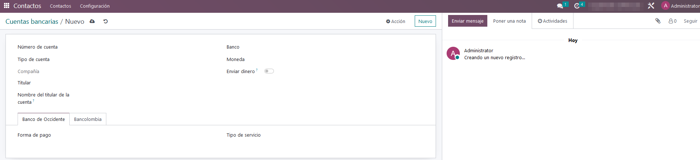
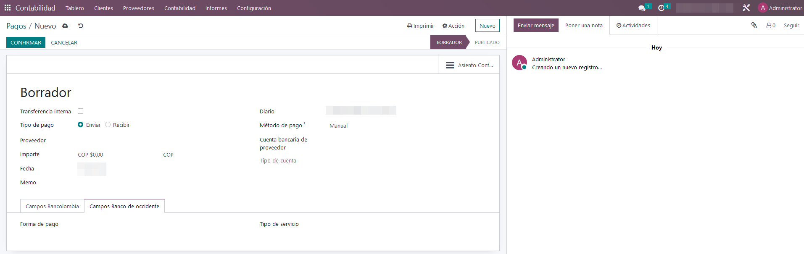
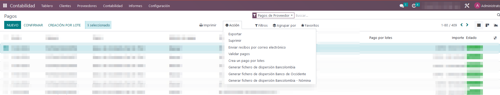
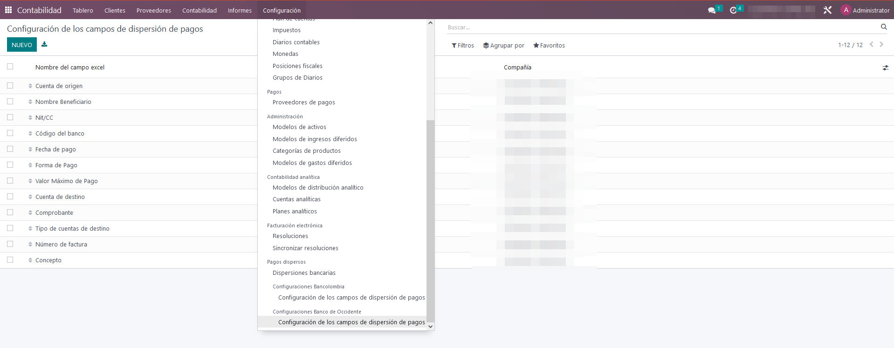
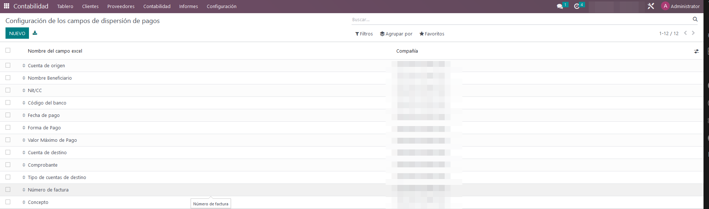
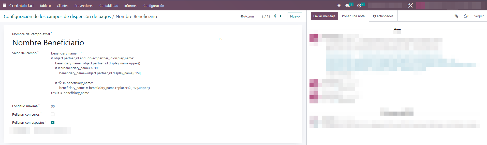

Dispersión de pagos (Banco de Occidente)
Este módulo facilita la generación de un archivo plano conforme a los lineamientos establecidos por el Banco de Occidente para la construcción del archivo de texto requerido para la dispersión bancaria en su plataforma.
En las cuentas bancarias, se añaden dos campos adicionales: la forma de pago y el tipo de servicio. Estos campos se transfieren automáticamente al formulario de pago a proveedores cuando se selecciona la cuenta del tercero.


En los pagos, se crea una nueva acción llamada "Generar fichero de dispersión Banco de Occidente".

En el menú de configuración de la aplicación de facturación, se incluye un nuevo submenú llamado "Configuraciones Banco de Occidente" dentro de "Dispersiones bancarias". Aquí se ubicará el formulario para configurar los campos que constituirán el cuerpo o sección 2 del archivo plano que se envía al banco.


Los campos para la configuración del archivo plano constan de los siguientes elementos:
-
Nombre: Es el nombre descriptivo del campo.
-
Valor del campo: Viene predefinido con valores por defecto, pero también se pueden definir expresiones en Python. Estas expresiones se evaluarán al ejecutar la función que genera el archivo.
-
Longitud máxima: Indica la longitud máxima del campo en el archivo plano.
-
Rellenar con ceros o espacios: Se selecciona si el campo debe rellenarse con ceros o con espacios, de acuerdo con la especificación del manual. Algunos campos requieren alineación a la izquierda con ceros o a la derecha con espacios.
importante resaltar que la secuencia de los campos no debe alterarse, ya que esta determina las posiciones dentro del archivo.

Cuando se activa la acción para generar el archivo de dispersión del Banco de Occidente, el sistema descarga el archivo y, simultáneamente, crea un registro en el menú "Dispersiones bancarias" dentro de la sección de "Facturación/Proveedores".